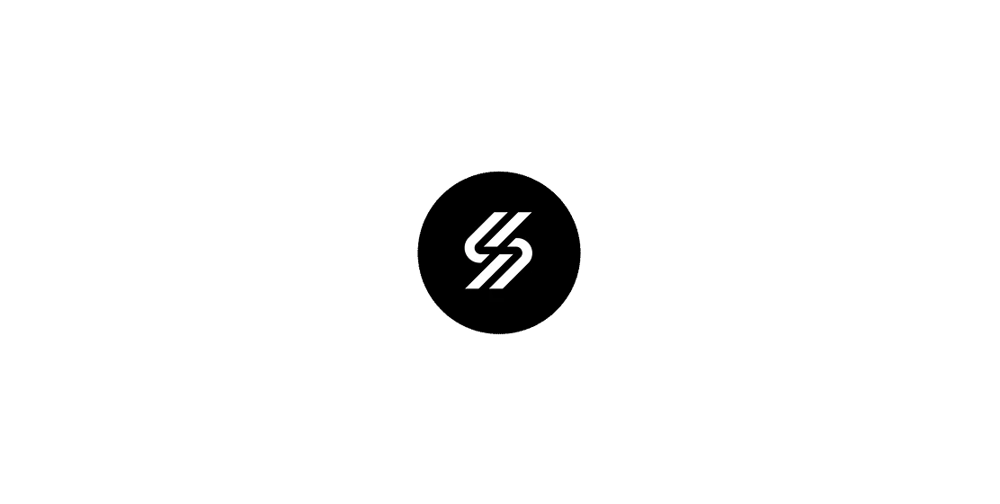
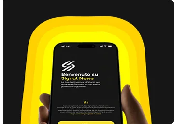
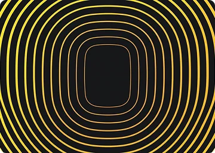
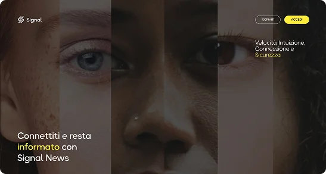
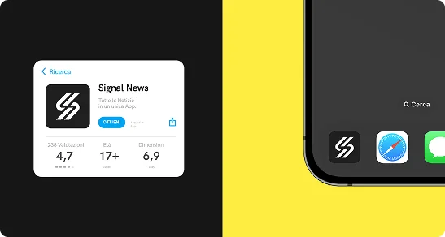
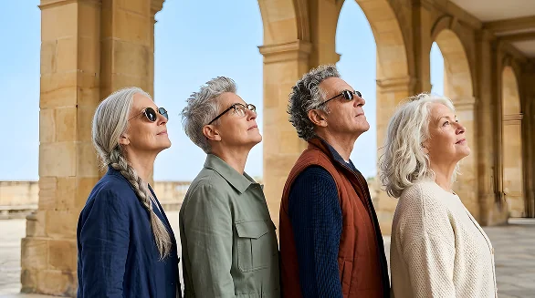
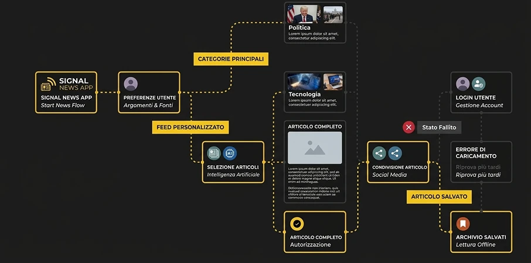
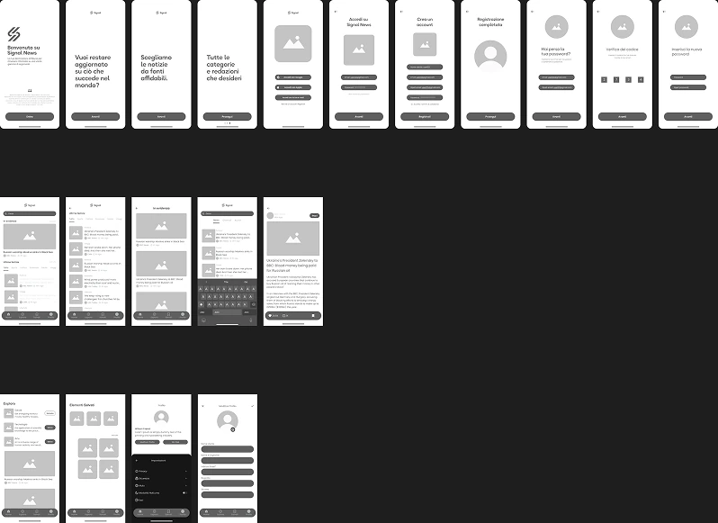
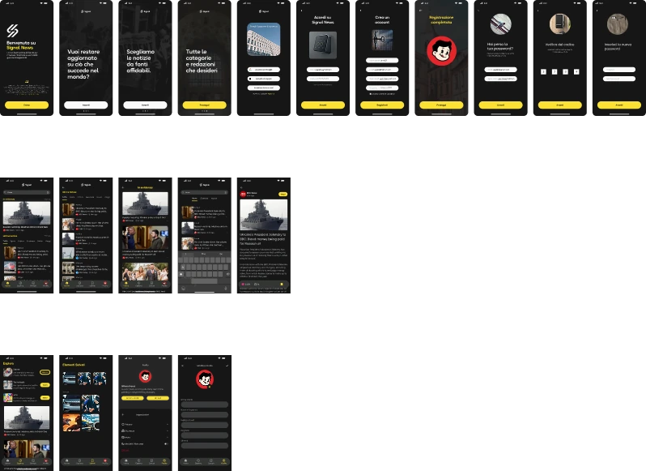
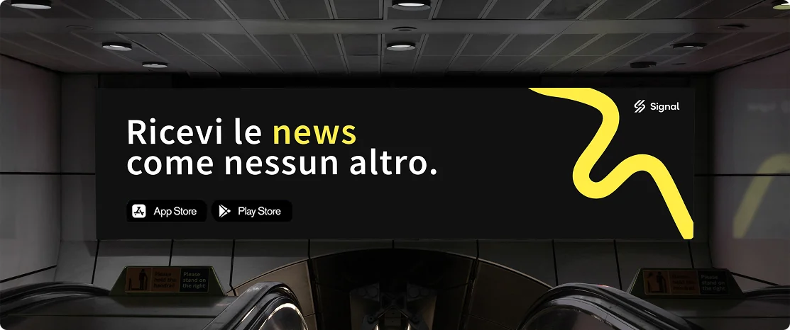

Process highlights
Work overview
Timeline
Gen - Marzo 2024
Disciplines
Product Design
UX/UI Design
Visual Design
Web Design
Responsibilities
UX Audit & Competitive Analysis
User Flows & Information Architecture
Wireframing & High-Fidelity Design
Design System & Components (Figma)
Prototyping & Interaction Design
Tools
Figma (Design System / Prototype
FigJam (User Flows & Ideation)
Contesto / Brief
Project Introduction
Signal News nasce con l'obiettivo di rendere l'informazione digitale più accessibile e inclusiva per la generazione Boomer. Il progetto affronta il divario digitale e le difficoltà di accesso alle piattaforme informative contemporanee, proponendo un'applicazione mobile progettata intorno alle esigenze di un pubblico spesso poco rappresentato. La sfida è creare un'esperienza intuitiva, chiara e coinvolgente, capace di avvicinare gli utenti al mondo dell'informazione digitale e favorire una partecipazione più consapevole.

Idea
Creative Concept
Il concept di Signal News si fonda sull'idea di un'informazione senza barriere, capace di superare le distanze generazionali attraverso il design digitale. L'applicazione interpreta l'inclusione come principio progettuale, trasformandola in un linguaggio visivo essenziale, accessibile e riconoscibile. La palette cromatica, la tipografia e gli elementi grafici sono studiati per favorire leggibilità e orientamento, dando vita a un'identità che mette al centro le persone e il loro diritto a un'informazione chiara e accessibile.





Target
User Persona
I Baby Boomer rappresentano il gruppo demografico più numeroso in molti paesi occidentali, con circa 76 milioni di americani appartenenti a questa generazione. Le decisioni politiche e di marketing non possono ignorare gli interessi dei Baby Boomer. Purtroppo, sono spesso oggetto di pregiudizi negativi per i costi crescenti dell’assistenza sanitaria pubblica. È per questo che abbiamo creato l’app Signal News: per offrire una vasta gamma di notizie che includono il nostro target e promuovere l’integrazione senza pregiudizi.

Sviluppo
User Interface / User Flow
Lo sviluppo progettuale parte dall'analisi delle esigenze degli utenti e dalla definizione dei principali percorsi di navigazione. Lo user flow organizza le funzionalità dell'applicazione in modo semplice e accessibile, accompagnando l'utente dalla schermata iniziale alla consultazione delle notizie, dalla selezione delle categorie alla lettura degli articoli. Particolare attenzione viene dedicata alla gerarchia delle informazioni, alla leggibilità dei contenuti e alla riduzione delle complessità di navigazione, per garantire un'esperienza fluida e intuitiva.

Tipografia - Palette
Visual System
Subheader / Caption font
Source Sans Pro
1234567890
AaBbCcDdEeFfGgHhIiJjKkLlMmNn
OoPpQqRrSsTtUuVvWwXxYyZz
Headline font
Okta Neue
1234567890
AaBbCcDdEeFfGgHhIiJjKkLlMmNn
OoPpQqRrSsTtUuVvWwXxYyZz
Wireframe
Visual System

App mobile
High-Fidelity
La fase di high-fidelity traduce la struttura UX in un'interfaccia mobile completa, definendo componenti, layout e sistema visivo dell'applicazione. Il design privilegia una navigazione immediata, testi leggibili, contrasti cromatici definiti e un'organizzazione chiara dei contenuti. Ogni schermata è progettata per semplificare l'interazione e rendere la consultazione delle notizie un'esperienza accessibile, piacevole e autonoma, senza rinunciare a un'estetica contemporanea.


Billboard
Outdoor Advertising
